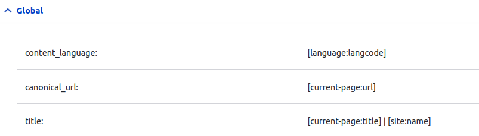

Pour le projet final on fait un peu de metatags: facebook, twitter et description minimum.
Voir creer un style d'image qui servira pour les description google et autres
Pour l'image
[node:field_media:entity:field_media_image:facebook_meta_image:url]
Pour l'image fb
[node:field_media:entity:field_media_image:facebook_meta_image:width]
[node:field_media:entity:field_media_image:facebook_meta_image:height]
Ajouter image opengraph
Creer le style d'image à la dimension que l'on souhaite
Puis dans metatag
admin/config/search/metatag
Pour connaitre la liste des tokens admin/help/token
Choisir le contenu (par exemple) --> modifier
dfans open graph ajouter les tokens ue l'on souhaite pour l'image
On choisira le field_image du node

largeure
[node:field_visual:entity:field_media_image:facebook_meta_image:width]
hauteur
[node:field_visual:entity:field_media_image:facebook_meta_image:height]
alternatif text
[node:field_visual:entity:field_media_image:alt]
petit resumé des open graph config
config pour les news
config pour le global
